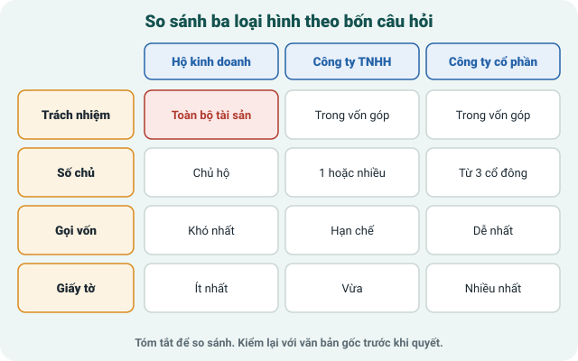

K10 · Năng lực số, AI và quy tắc nơi làm việc › Bậc 3 Vững vàng
Pháp lý khởi sự: từ hộ kinh doanh lên doanh nghiệp
Bài này làm Tờ 5: Bảng kiểm pháp lý khởi sự. Mẫu in. Bài giúp bạn hỏi đúng câu, không phải tư vấn pháp lý. Nguồn luật và ngày tra ghi ở cuối bài. Cách đọc văn bản quy định có ở bài Biến quy định thành việc làm (N4).
1. Mục tiêu
- So sánh hộ kinh doanh, công ty TNHH, công ty cổ phần theo bốn câu hỏi.
- Lập bảng kiểm pháp lý khởi sự, ghi rõ việc cần hỏi chuyên gia.
2. Khởi động truy xuất
- Công thức điểm hòa vốn là gì?
- Vì sao nên tách tài khoản kinh doanh với tiền gia đình?
Đáp án
- Chi phí cố định mỗi tháng ÷ lãi gộp mỗi đơn vị.
- Để biết doanh nghiệp đang lãi hay lỗ thật.
Xem lại: Những con số sống còn.
3. Giải thích
Chọn loại hình là quyết định pháp lý đầu tiên. Nó ảnh hưởng đến rủi ro của bạn, cách gọi vốn và giấy tờ phải làm.
Bốn câu hỏi để so sánh:
- Trách nhiệm: nếu kinh doanh nợ, bạn mất đến đâu?
- Số chủ: một người hay nhiều người cùng góp?
- Gọi vốn: có cần bán cổ phần cho nhà đầu tư không?
- Giấy tờ: bạn có đủ sức làm sổ sách, báo cáo của loại hình đó không?

Tóm tắt theo Luật Doanh nghiệp: chủ doanh nghiệp tư nhân chịu trách nhiệm bằng toàn bộ tài sản của mình. Thành viên công ty TNHH và cổ đông công ty cổ phần chịu trách nhiệm trong phạm vi vốn đã góp. Công ty cổ phần được phát hành cổ phần để huy động vốn.
Ba thay đổi gần đây founder nên biết:
- Chủ sở hữu hưởng lợi. Từ 01/7/2025, hồ sơ đăng ký doanh nghiệp có danh sách chủ sở hữu hưởng lợi, nếu có. Đó là người thực tế sở hữu hoặc kiểm soát doanh nghiệp. Doanh nghiệp phải lưu và cập nhật thông tin này.
- Miễn thuế cho doanh nghiệp nhỏ mới. Nghị quyết 198/2025/QH15 cho doanh nghiệp nhỏ và vừa miễn thuế thu nhập doanh nghiệp 3 năm. Thời gian tính từ ngày cấp giấy đăng ký lần đầu. Nghị định 20/2026/NĐ-CP hướng dẫn chi tiết.
- Bỏ thuế khoán. Từ 01/01/2026, hộ kinh doanh không còn nộp thuế theo phương pháp khoán.
Điều kiện được hưởng ưu đãi do văn bản hướng dẫn quy định. Đọc văn bản gốc trước khi tính vào kế hoạch.
Tờ 5. Bảng kiểm trước khi đăng ký
- Loại hìnhTrả lời bốn câu hỏi, ghi lý do chọn.
- Ngành nghềCó phải ngành có điều kiện không? Cần giấy phép gì?
- Người góp vốnAi góp bao nhiêu, ai quyết gì. Viết thành văn bản.
- Thuế, hóa đơnCách kê khai, hóa đơn điện tử, ưu đãi có đủ điều kiện không.
- Hỏi chuyên giaGhi câu hỏi cụ thể cho luật sư hoặc kế toán.
4. Ví dụ tại nơi làm việc Việt Nam
Tình huống giả định. Chị Thảo có hộ kinh doanh bán đồ gỗ ở Bình Dương. Một người bạn muốn góp vốn để mở xưởng và bán cho khách sạn.
Chị trả lời bốn câu hỏi. Trách nhiệm: xưởng sẽ vay ngân hàng, chị không muốn đặt cả nhà vào rủi ro. Số chủ: hai người. Gọi vốn: chưa cần nhà đầu tư ngoài trong 2 năm. Giấy tờ: chị có thể thuê dịch vụ kế toán.
Chị nghiêng về công ty TNHH hai thành viên trở lên. Chị ghi câu hỏi cho luật sư: chuyển từ hộ kinh doanh lên thì làm thủ tục gì? Có được hưởng ưu đãi của doanh nghiệp mới không?
Hai người viết thỏa thuận góp vốn: ai góp bao nhiêu, ai quyết việc gì, nếu một người muốn rút thì sao.
Vì sao cách này tốt: chị quyết dựa trên bốn câu hỏi, không theo lời đồn. Câu hỏi cho chuyên gia cụ thể, nên buổi tư vấn ngắn và đúng việc.
5. Thực hành
Tình huống giả định. Ba bạn trẻ ở Hà Nội làm phần mềm quản lý lớp học. Họ dự định gọi vốn từ quỹ đầu tư trong năm sau.
Trả lời bốn câu hỏi. Chọn loại hình và viết 3 câu hỏi cho chuyên gia.
Gợi ý 1
Câu hỏi quyết định ở đây là gọi vốn. Nhà đầu tư thường muốn mua gì?
Gợi ý 2
Ba người cùng làm thì chuyện chia quyền và chia phần cần viết ra từ đầu.
Lời giải mẫu
- Trách nhiệm: muốn giới hạn trong vốn góp.
- Số chủ: ba người.
- Gọi vốn: có, năm sau.
- Giấy tờ: chấp nhận thuê kế toán.
- Nghiêng về: công ty cổ phần, vì dễ phát hành cổ phần cho nhà đầu tư.
Câu hỏi cho chuyên gia
- Doanh nghiệp của chúng tôi có thể là doanh nghiệp khởi nghiệp sáng tạo không? Cần điều kiện gì?
- Nếu một người sáng lập rời đi sau 1 năm, cổ phần của họ xử lý thế nào?
- Ưu đãi thuế cho doanh nghiệp nhỏ mới áp dụng với chúng tôi ra sao?
(Thông tin là giả định.)
6. Tự kiểm tra
Chọn đáp án. Mỗi lựa chọn đều có giải thích.
Câu 1. Bạn sắp vay ngân hàng để mở xưởng và không muốn tài sản gia đình chịu rủi ro. Câu hỏi nào trong bốn câu quan trọng nhất ở đây?
-
Chưa đúng. Giấy tờ quan trọng, nhưng điều bạn lo là phạm vi mất mát khi nợ.
-
Đúng. Đúng. Loại hình quyết định bạn chịu trách nhiệm đến đâu khi kinh doanh nợ.
-
Chưa đúng. Ở đây bạn vay ngân hàng, chưa bán cổ phần cho nhà đầu tư.
Câu 2. Ba người sáng lập dự định bán cổ phần cho quỹ đầu tư năm sau. Loại hình nào thường phù hợp hơn?
-
Chưa đúng. Hộ kinh doanh không phát hành cổ phần, và chủ hộ chịu trách nhiệm bằng toàn bộ tài sản.
-
Đúng. Đúng. Công ty cổ phần được phát hành cổ phần để huy động vốn.
-
Chưa đúng. Doanh nghiệp tư nhân chỉ có một chủ và không phát hành cổ phần.
Câu 3. Bạn của bạn nói: "Công ty nhỏ mới mở được miễn thuế 3 năm, cứ tính vào kế hoạch." Phản hồi nào đúng nhất?
-
Chưa đúng. Ưu đãi áp dụng cho doanh nghiệp nhỏ và vừa, theo điều kiện ở văn bản hướng dẫn.
-
Đúng. Đúng. Nghị quyết 198/2025/QH15 có quy định này; Nghị định 20/2026/NĐ-CP hướng dẫn chi tiết.
-
Chưa đúng. Có. Khoản 4 Điều 10 Nghị quyết 198/2025/QH15 quy định miễn thuế 3 năm.
Câu 4. Vì sao nên viết thỏa thuận góp vốn với người cùng làm ngay từ đầu?
-
Chưa đúng. Không phải vì mất lòng tin. Văn bản giúp tránh hiểu nhầm khi có thay đổi.
-
Đúng. Đúng. Những điều này dễ thống nhất khi mọi chuyện còn tốt.
-
Chưa đúng. Mâu thuẫn giữa người sáng lập có thể xảy ra trước khi có nhà đầu tư.
7. Phản tư
- Nếu kinh doanh của bạn nợ một khoản lớn, tài sản nào của gia đình đang chịu rủi ro?
- Bạn đã viết thỏa thuận với người cùng làm chưa?
8. Áp dụng thật
Trong 7 ngày tới, điền Tờ 5. Gửi danh sách câu hỏi cho một luật sư hoặc kế toán. Nhiều tỉnh có điểm hỗ trợ doanh nghiệp nhỏ; hỏi sở chuyên môn nơi bạn ở.
Cập nhật lần cuối: 14/11/2026. Nguồn (tra cứu ngày 14/11/2026): Luật Doanh nghiệp số 59/2020/QH14, hiệu lực từ 01/01/2021; sửa đổi bởi Luật số 03/2022/QH15 và Luật số 76/2025/QH15 (ban hành 17/6/2025, hiệu lực từ 01/7/2025). Còn hiệu lực. Luật 76/2025/QH15 bổ sung quy định về chủ sở hữu hưởng lợi. Nghị quyết 198/2025/QH15 về cơ chế, chính sách đặc biệt phát triển kinh tế tư nhân. Ban hành và có hiệu lực ngày 17/5/2025. Khoản 4 Điều 10: miễn thuế thu nhập doanh nghiệp 3 năm cho doanh nghiệp nhỏ và vừa. Khoản 6 Điều 10: bỏ thuế khoán từ 01/01/2026. Nghị định 20/2026/NĐ-CP, ban hành ngày 15/01/2026, hướng dẫn Nghị quyết 198/2025/QH15. Bài chỉ tóm tắt ý chính. Điều kiện cụ thể nằm ở văn bản gốc và văn bản hướng dẫn.
9. Siêu dữ liệu
| skill | K10 · Năng lực số, AI và quy tắc nơi làm việc |
|---|---|
| level | Bậc 3 · Vững vàng |
| group | N7 |
| framework_map | EntreComp: Mobilising resources; Ethical and sustainable thinking; CSfW: 1b Work with roles, rights and protocols; WEF: Technological literacy; DigComp 3.0 (chỉ dẫn chiếu) |
| updated | 2026-11-14 |
Hoàn thành bài
Đánh dấu đã học để site gợi ý lịch ôn sau 1, 3 và 7 ngày. Dữ liệu chỉ lưu trên máy của bạn.
Lịch ôn gợi ý: